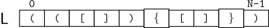

Uma sequência de símbolos é dita balanceada quando todos os símbolos de abertura possuem um símbolo de fechamento correspondente, respeitando a ordem correta de aninhamento.
Neste problema, considere uma lista L de tamanho N formada apenas pelos caracteres:
Por exemplo, a lista abaixo possui N = 10 elementos e é uma sequência balanceada.

Observe que:
Por exemplo:
enquanto
não são balanceadas.
A sua tarefa consiste em determinar se a lista L fornecida está balanceada.